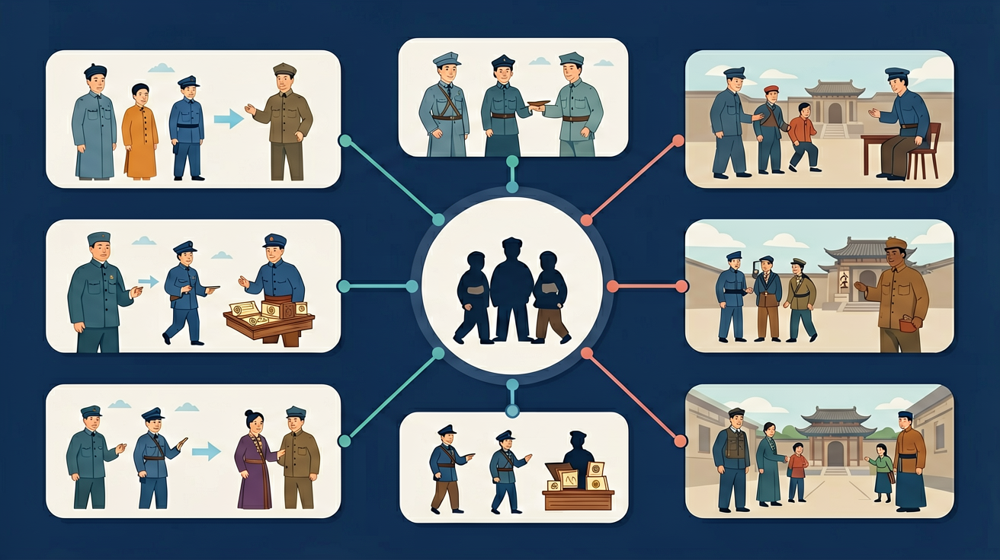

认识列强侵华对中国社会的影响，概述晚清时期中国人民反抗外来侵略的斗争事迹，理解其性质和意义；认识社会各阶级为挽救危局所作的努力及存在的局限性。

🎯 能说出戊戌变法的'君主立宪'与辛亥革命的'民主共和'核心主张区别
🎯 能分析戊戌变法失败与辛亥革命成功的3点关键原因
🎯 能判断辛亥革命后中国社会仍存在的封建残余表现
❓ 为什么戊戌变法只维持了103天就失败了？
❓ 辛亥革命为啥能成功推翻清朝，而戊戌变法不行？
❓ 课本说辛亥革命是'不完全的胜利'，到底哪里不彻底？
学完这一课，这些问题你都能自信地回答。
戊戌变法颁布的《定国是诏》实质是要建立？
标志辛亥革命爆发的事件是？
戊戌变法与辛亥革命是高中历史的重要内容。认识列强侵华对中国社会的影响，概述晚清时期中国人民反抗外来侵略的斗争事迹，理解其性质和意义；认识社会各阶级为挽救危局所作的努力及存在的局限性。
了解孙中山三民主义的基本内容，理解辛亥革命与中华民国建立对中国结束帝制、建立民国的意义及局限性；了解北洋军阀的统治及特点。
点击时代/图层按钮切换地图；悬停边界，点击城市标记查看说明。
把卡片拖到核心概念 / 方法技能 / 应用情境 / 常见误区。
拖完 4 项后自动判分。
戊戌变法试图通过维新变法实现君主立宪与救亡图强，因顽固派镇压而失败，但思想启蒙意义重大。辛亥革命推翻清王朝与帝制，建立中华民国，使民主共和观念传播，但未完成反帝反封建的彻底任务。
比较改良与革命：领导阶级、方式、政权目标。肯定辛亥革命结束帝制的伟大意义，同时指出袁世凯窃国与社会性质未根本改变。
常见误区：常见误区是要么全盘否定辛亥革命，要么认为它已彻底完成民主革命任务。
辛亥革命的最大历史功绩之一是？
实例一：现代城市治理中的渐进改革思维。2018年深圳"禁摩限电"政策调整就借鉴了戊戌变法"局部试验"方法——先在龙岗区试点非机动车道改造，评估效果后再推广，避免激进改革引发社会反弹。这种"制度弹性"概念正是维新派"变法而不乱法"主张的当代实践。
实例二：区块链技术在选举中的应用。2020年美国科罗拉多州试验区块链投票系统时，其"去中心化""不可篡改"特性恰似辛亥革命追求的民主监督机制。孙中山设想的"政权治权分离"在数字时代有了新技术载体，如以太坊智能合约能实现《临时约法》未能落实的选举审计。
实例三：企业组织变革中的权力博弈分析。阿里巴巴2021年"拆中台"战略与清末"皇族内阁"（1911年）有相似困境——当改革触及既得利益（如军机处官僚/淘宝事业部），即便顶层设计合理也会遭遇执行扭曲。历史提醒管理者：机构改革必须配套权力再分配机制。
问题一：如果戊戌变法延续更长时间，能否避免辛亥革命？注意1895-1898年间维新派的具体措施：他们主张君主立宪但拒绝地方自治（如湖南南学会被压制），试图通过中央集权推行改革。思考日本明治维新成功的关键恰是"废藩置县"——当改革者自身带有集权惯性时，其历史局限性是否注定导致失败？
问题二：辛亥革命后出现的"军阀混战"是革命的必然结果吗？对比1916年袁世凯死后皖系、直系军阀崛起与1789年法国大革命后的雅各宾派专政：当旧制度（科举制/三级会议）崩溃而新制度（议会政治/宪政）未成熟时，是否必然出现权力真空？注意孙中山1924年改组国民党时特别强调"以党治国"的历史语境。
先看19世纪末的中国困局：甲午战败（1895年）暴露洋务运动"中体西用"的局限，康有为《上清帝第六书》提出"全变则强"——这不仅是技术革新，更是制度变革的呼声。接着观察维新派的具体操作：他们通过创办《时务报》（1896年发行量达1.7万份）、组织强学会来制造舆论，但103天的变法中，真正落实的仅设立京师大学堂等教育措施，核心的裁撤冗衙、设立制度局等均遭抵制。
这种改革受挫催生了更激进的革命思潮。孙中山从1894年兴中会"驱除鞑虏"到1905年同盟会"创立民国"，革命纲领逐步完善。值得注意的是，1911年10月10日武昌起义爆发时，孙中山还在美国筹款——革命已从精英行动发展为社会运动，新军、商会、立宪派多方力量共同终结了268年的清朝统治。
最后聚焦制度转型的复杂性：1912年《临时约法》将总统制改为责任内阁制以防袁世凯专权，但宋教仁案（1913年）证明纸面宪法挡不住枪杆子。正如严复所说"旧者已亡，新者未立"，从戊戌到辛亥的二十年，展现的是传统帝国向现代国家转型的深层阵痛，这种阵痛在科举废除（1905年）、皇族内阁出台（1911年）等关键节点不断加剧，最终使改良让位于革命。
错误一：认为戊戌变法（1898年）是清政府主动推行的改革。实际上光绪帝在康有为等维新派推动下颁布《明定国是诏》，但实际掌权的慈禧太后仅容忍改革103天便发动政变。这种误解源于将皇权视为铁板一块，忽略了帝后权力斗争——变法诏书虽以皇帝名义发布，但练兵、财政等核心权力始终掌握在后党手中。
错误二：混淆辛亥革命（1911年）与武昌起义的具体关系。武昌新军起义只是导火索，此前同盟会已发动过10余次武装起义（如1911年广州黄花岗起义）。学生常将二者等同，源于对革命"量变到质变"过程认知不足。孙中山"民族民权民生"三民主义纲领早在1905年就已提出，革命思想传播才是深层动因。
错误三：高估《临时约法》的实际效力。1912年颁布的这部宪法性文件虽确立三权分立原则，但袁世凯就任临时大总统后立即架空国会。该误解源于将法律文本等同于政治现实，事实上当时中国缺乏宪政传统，军队私有化（北洋军阀）才是真正的权力基础。
复制提示词到 AI 学伴，生成「戊戌变法与辛亥革命」的时间轴或事件提纲；也可以上传你手绘的示意图，请 AI 学伴点评。
复制后可粘贴到 AI 学伴继续对话。
下列哪项最能体现戊戌变法和辛亥革命的共同点？
通过比较戊戌变法和辛亥革命的背景、内容和影响，分析两者在中国近代化进程中的作用和意义。
关于戊戌变法与辛亥革命的学习，哪种做法最科学？
选一个并查看反馈。
先独立作答，再点选项查看对错与错因。
戊戌变法的主要推动者是：
辛亥革命的主要目标是：
戊戌变法失败的主要原因是：
戊戌变法又称____变法。
答案：百日
戊戌变法从1898年6月11日开始，到9月21日结束，仅持续了103天，因此又称百日维新。
辛亥革命爆发于____年。
答案：1911
辛亥革命始于1911年10月10日的武昌起义，最终推翻了清朝统治。
✅ 变法推动了思想启蒙，为辛亥革命奠定基础
💡 忽视历史事件的连续性
✅ 民族主义口号在革命过程中发生转变
💡 未注意革命纲领的动态调整
口诀：维新保皇百日败，革命共和帝制埋
类比：像用不同方法修手机：变法是想刷机救系统，革命是直接换新机
（升学题）《中华民国临时约法》规定政体是？
（迁移题）若用'手术'比喻历史变革，最准确的是？
辛亥革命后仍存在的封建残余是？
点击节点跳转到对应章节；可切换布局。